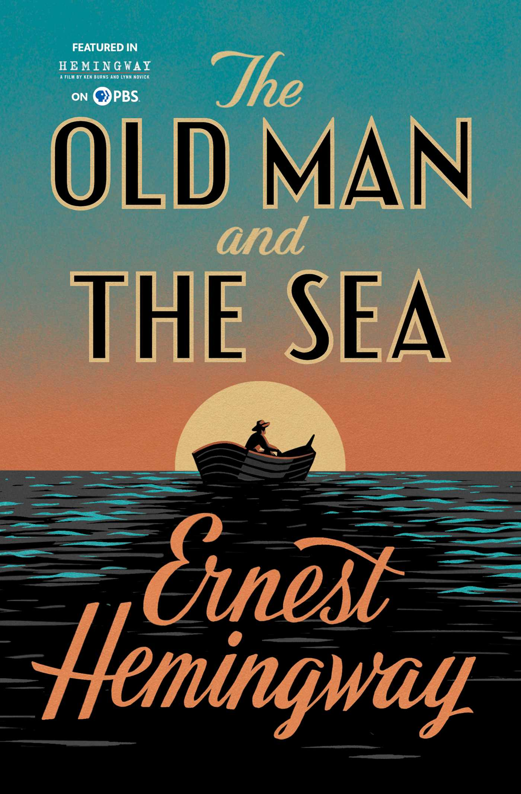

ഏണസ്റ്റ് ഹെമിങ്വേ (Ernest Hemingway)
Written By: കെ ജെ സ്റ്റീഫൻ

അമേരിക്കയിൽ ഏറ്റവും അധികം വായിക്കപ്പെടുകയും അംഗീകരിക്കപ്പെടുകയും ആരാധികപ്പെടുകയും ചെയ്യുന്ന നോവലിസ്റ്റ് ആണ് ഏണസ്റ്റ് ഹെമിംഗ് വേ. 1899 ജൂലൈ 21ന് ഇല്ലിനോയിസിലെ ഓക്പാർക്ക് എന്ന സ്ഥലത്താണ് അദ്ദേഹം ജനിച്ചത്. പിതാവായ ഡോക്ടർ ക്ലാരൻസ് ഇട് മണ്ട് -ൽ നിന്നും മീൻപിടുത്തത്തിലും നായാട്ടിലും തുഴച്ചിലിലും അപകടകരമായി ജീവിക്കുന്നതിനുള്ള താല്പര്യവും മാതാവായ ഗ്രേസ് ഹാളിൽ നിന്ന് അസാധാരണമായ നിരീക്ഷണ പാഠവവും ലോല മനസ്സും അദ്ദേഹത്തിന്റെ പാരമ്പര്യമായി ലഭിച്ചു. സ്കൂളിൽ അത്ര മികച്ച വിദ്യാർത്ഥി ആയിരുന്നില്ല ഏണസ്റ്റ്. 1917 - ൽ സ്കൂൾ വിദ്യാഭ്യാസം പൂർത്തിയാക്കി. അദ്ദേഹത്തെ ഒരു ഡോക്ടർ ആക്കാൻ ആണ് പിതാവ് ആഗ്രഹിച്ചത്. മാതാവാകട്ടെ, തന്റെ മകനെ ഒരു സംഗീതജ്ഞനായി കാണാൻ ആഗ്രഹിച്ചു. എന്നാൽ യുവാവായ ഏണസ്റ്റ് ഒരു സൈനികനാകാനുള്ളസ്വപ്നം കൈവിട്ടില്ല.
ഒന്നാം ലോകമഹായുദ്ധകാലത്ത് അദ്ദേഹം സൈന്യത്തിൽ ചേരാൻ ശ്രമിച്ചു. പക്ഷേ കാഴ്ചയിലെ നേരിയ വൈകല്യം നിമിത്തം അദ്ദേഹത്തിന്റെ ശ്രമം പരാജയപ്പെട്ടു. കൻസാസ് നഗരത്തിൽ റിപ്പോർട്ടറായി ജോലി തുടങ്ങി. യുദ്ധ വാർത്തകൾ അദ്ദേഹം റിപ്പോർട്ട് ചെയ്തു. എങ്കിലും സജീവമായി യുദ്ധരംഗത്ത് പ്രവർത്തിക്കാനുള്ള ആഗ്രഹം അദ്ദേഹത്തെ അലട്ടിക്കൊണ്ടിരുന്നു. ഇറ്റാലിയൻ യുദ്ധമുന്നണിയിൽ ആംബുലൻസ് ഡ്രൈവേഴ്സിന്റെ ആവശ്യമുണ്ടെന്ന് അദ്ദേഹം കേൾക്കാനിടയായി. താമസിയാതെ അദ്ദേഹം ആ ജോലി സ്വീകരിച്ചു. ഏതാനും ദിവസത്തിനകം അദ്ദേഹത്തിന് മനസ്സിലായി യുദ്ധ മുന്നണിക്കു പിന്നിൽ ആംബുലൻസ് ഡ്രൈവറുടെ ജോലി സുരക്ഷിതമായ ഒന്നാണെന്ന്. അല്പം കൂടി സജീവമായി യുദ്ധരംഗത്ത് പ്രവർത്തിക്കാൻ അദ്ദേഹം തീരുമാനിച്ചു. യുദ്ധത്തിൽ പങ്കെടുക്കുന്ന സൈനികർക്ക് വേണ്ടി കാന്റീൻ സേവനം തുടങ്ങി. ഒരു സൈക്കിളിൽ സവാരി ചെയ്തുകൊണ്ട് കിടങ്ങുകളിൽ കഴിയുന്ന സൈനികർക്ക് കത്തുകളും പുകയിലയും ചോക്ക്ലേറ്റും അദ്ദേഹം എത്തിച്ചു കൊടുത്തു കൊണ്ടിരുന്നു. കിടങ്ങിൽ കഴിയുന്ന ഒരു സൈനികന് ചോക്ലേറ്റ് ബാർ കൈമാറുന്ന അവസരത്തിൽ ഒരു മോർട്ടാർ സെല്ല് തൊട്ടടുത്ത് പതിച്ചു. സാരമായി പരിക്കേറ്റ അദ്ദഹം പൊടിപടലങ്ങൾക്കൊണ്ട് മൂടി. ഏതാണ്ട് 250ലേറെ സ്റ്റീൽ ആണികൾ ദേഹത്ത് തറച്ച് ബോധരഹിതനായി. ബോധം വീണ്ടെടുത്തപ്പോൾ തൊട്ടടുത്ത് വളരെ മാരകമായി മുറിവേറ്റ കിടക്കുന്ന ഒരു സൈനികനെ രക്ഷിക്കാനാണ് ശ്രമിച്ചത്. മറ്റൊരാളെ കൂടി രക്ഷിക്കാനുള്ള ശ്രമത്തിനിടയിൽ ഇടതു കാൽ മുട്ടിനു വെടിയേറ്റു. ആശുപത്രിയിൽ ചികിൽസക്കിടെ ആഗ്നസ് എന്ന ഒരു ഇംഗ്ലീഷ് നേഴ്സിനെ പരിചയപ്പെടുകയും അവളുമായി പ്രണയത്തിലാവുകയും ചെയ്തു.
ഡിസ്ചാർജ് ചെയ്ത ശേഷം അമേരിക്കയിൽ തിരിച്ചെത്തിയ ഏണസ്റ്റ് തികച്ചും വ്യത്യസ്തനായ വ്യക്തിയായിരുന്നു. യുദ്ധാനുഭവങ്ങളും മരണവും പുതിയ ആൾക്കാരും പുതിയ ഭാഷയും ആദ്യ പ്രണയവും എല്ലാം അദ്ദേഹത്തിന്റെ മനസ്സിലെ അടിഞ്ഞുകൂടിയിരുന്നു. ഈ കാലത്ത് ഒരുപാട് വായിച്ചു. എല്ലാ ദിവസവും ആഗ്നസിന്റെ കത്തിനു വേണ്ടി വളരെ പ്രതീക്ഷയോടെ കാത്തിരുന്നു. ഒരു ദിവസം അദ്ദേഹം വളരെ നിരാശനും അസ്വസ്തനുമായി കാണപ്പെട്ടു. വീട്ടുകാരുടെ ആവർത്തിച്ചുള്ള ചോദ്യങ്ങൾക്ക് അദ്ദേഹം മറുപടി പറഞ്ഞു. "ആഗ്നസിന്റെ കത്തു കിട്ടി. അവൾ അമേരിക്കയിലേക്ക് വരുന്നില്ല. ഒരു ഇറ്റാലിയൻ മേജറെ വിവാഹം ചെയ്തിരിക്കുന്നു."
1920ല് അദ്ദേഹം തിരിച്ച് യൂറോപ്പിൽ എത്തി. ഇത്തവണ ടൊറോൺടോ സ്റ്റാർ എന്ന പത്രത്തിന്റെ ലേഖകനായിട്ടാണ് എത്തിയത്. പാരീസിൽ വച്ച് ഇസ്രാ പൗണ്ട്, ജർ ട്രൂട് സ്റ്റെയിൻ തുടങ്ങിയ പ്രസിദ്ധരായ എഴുത്തുകാരുമായി പരിചയത്തിൽ ആയി. തുടർന്ന് അദ്ദേഹം എഴുതി തുടങ്ങി. പക്ഷേ അതൊന്നും പ്രസാധക യോഗ്യമായിരുന്നില്ല എന്ന കാരണത്താൽ തിരസ്കരിക്കപ്പെട്ടു. ജീവിതത്തിൽ അനുഭവങ്ങൾ കുറവായതുകൊണ്ടാണ് അദ്ദേഹത്തിന്റെ സാഹിത്യകൃതികൾ വിജയിക്കാത്തത് എന്ന് ചിലസുഹൃത്തുക്കൾ പറയുകയുണ്ടായി. ഇത് കേട്ടപ്പോൾ ക്ഷുഭിതനായ അദ്ദേഹം യുദ്ധമുഖത്തെ അനുഭവങ്ങളും തകർന്നു പോയ തന്റെ പ്രണയവും വിവരിക്കുകയുണ്ടായി. "എന്തുകൊണ്ട് ഈ അനുഭവങ്ങൾ ഒരു നോവലായി എഴുതിക്കൂടാ?" ഒരു സംഹൃത്ത് ചോദിച്ചു. ഇതായിരുന്നു അദ്ദേഹത്തിന്റെ ആദ്യത്തെ വിജയിച്ച നോവലായ 'The Sun Also Rises'.
പിന്നീട് അദ്ദേഹം വ്യാപകമായി യാത്രചെയ്യുകയും ഒരു പുരുഷായുസ്സിൽ നേടാൻ പറ്റുന്ന എല്ലാവിധ സാഹസിക അനുഭവങ്ങളിലൂടെ കടന്നു പോവുകയും ചെയ്തു. ഇക്കാര്യത്തിലദ്ദേഹം ഹോമറിന്റെ ഒദിസേവുസിനെപ്പോലെ ആയിരുന്നു. എണ്ണമറ്റ സമുദ്രങ്ങളിൽ മീൻപിടിച്ചും സ്പെയിനിൽ കാളപ്പോരിൽ പങ്കെടുത്തതും ആഫ്രിക്കൻ വനാന്തരങ്ങളിൽ നായാട്ടു നടത്തിയും അദ്ദേഹം സംഭവബഹുലമായ ജീവിതാവസ്ഥയിലൂടെ കടന്നുപോയി. പിന്നീട് അമേരിക്കൻ ന്യൂസ് പേപ്പറിന് വേണ്ടി സ്പെയിൻ ആഭ്യന്തര യുദ്ധം റിപ്പോർട്ട് ചെയ്തു തുടങ്ങി. ഇക്കാലത്ത് അദ്ദേഹം എഴുതിയ നോവലാണ് 'മണിമുഴങ്ങുന്നത് ആർക്കുവേണ്ടി' (For Whom the Bell Tolls). രണ്ടാം ലോക മഹായുദ്ധത്തിൽ ക്യൂബ കേന്ദ്രീകരിച്ച് സജീവമായി യുദ്ധരംഗത്ത് ഉണ്ടായിരുന്നു. തന്റെ ബോട്ടിനെ ഒരു sub marine chaser ആയി സജ്ജമാക്കി അമേരിക്കയെ വലം വച്ചു കൊണ്ടിരുന്നു. തുടർന്ന് അദ്ദേഹം എഴുതിയ നോവലുകളാണ് 'Dearth in the Afternoon', 'Green Hills of Africa' തുടങ്ങിയവ. ഇതിൽ രണ്ടാമത്തെ നോവലിലാണ് ആഫ്രിക്കൻ വനാന്തരങ്ങളിലെ സാഹസികമായ നായാട്ട് അനുഭവങ്ങൾ വിവരിക്കുന്നത്.
ദശലക്ഷക്കണക്കിന് അമേരിക്കൻ ജനതയ്ക്ക് പൗരുഷം നിറഞ്ഞ നായക പരിവേഷത്തിന്റെ പ്രതീകമായി മാറി അദ്ദേഹം. പരുക്കനായിട്ടെങ്കിലും നർമ്മരസത്തോടുകൂടി സംസാരിക്കുകയും അലിവും ഔദാര്യവുമുള്ള അദ്ദേഹത്തെ അമേരിക്കൻ പട്ടാളക്കാർ "പാപ്പ" എന്ന് സ്നേഹത്തോടെ വിളിച്ചു.
1952 - ൽ അദ്ദേഹം എഴുതിയ ലഘു നോവലാണ് 'കിഴവനും കടലും' (The Old Man and the Sea). അടുത്തവർഷം ഇതിന് പുലിസർ സമ്മാനം ലഭിക്കുകയുണ്ടായി. 1954 - ൽ ഈ കഥ അദ്ദേഹത്തിന് നോബൽ സമ്മാനം നേടിക്കൊടുത്തു. തുടർന്ന് അദ്ദേഹം ഫ്ലോറിഡയിലും ക്യൂബയിലുമായി ജീവിച്ചു. ക്യൂബയിൽ കാസ്ട്രോ വിപ്ലവകാലത്ത് രാജ്യം വിടുകയും അമേരിക്കയിലെ ഇദാഹോ എന്ന സ്ഥലത്ത് സ്ഥിരതാമസം തുടങ്ങുകയും ചെയ്തു. 1961ൽ ഗോവണി പടിയിൽ നിന്ന് തെന്നിവീണതിനെ തുടർന്ന് അദ്ദേഹത്തിന്റെ സുഗമമായ ചലനശേഷി നഷ്ടപ്പെട്ടു. തുടർന്ന് സജീവമായ ജീവിതം സാധ്യമല്ല എന്ന് ബോധ്യപ്പെട്ട അദ്ദേഹം തന്റെ സംഭവ ബഹുലമായ ജീവിതത്തിന് പരിസമാപ്തി കുറിക്കുവാൻ തീരുമാനിച്ച് സ്വയം വെടിവെച്ചു മരിച്ചു. സംഘർഷങ്ങളും ഏറ്റുമുട്ടലുകളും പെട്ടെന്നുള്ള മരണങ്ങളും നിറഞ്ഞതായിരുന്നു അദ്ദേഹത്തിന്റെ കൃതികൾ ഏറെയും. താൻ എഴുതിയതുപോലെ അദ്ദേഹം ജീവിക്കുകയും മരിക്കുകയും ചെയ്തു.
കിഴവനും കടലും

ഏണസ്റ്റ് ഹെമിങ്ങ്വേയുടെ ഒരുപക്ഷേ ഏറ്റവും പ്രസിദ്ധമായ ലഘു നോവലാണ് കിഴവനും കടലും (The Old Man and The Sea). പ്രാപഞ്ചികമായ ഈ ലോകത്തിൽ പ്രതികൂല ഘടകങ്ങൾക്കെതിരെയുള്ള മനുഷ്യന്റെ ധീരമായ സഹനശക്തിയുടെയും പോരാട്ടത്തിന്റെയും ദൃഷ്ടാന്തകഥയാണ് ഈ കൃതി.
ഇതിലെ കേന്ദ്ര കഥാപാത്രം സാന്റിയാഗോ എന്ന വൃദ്ധനായ ഒരു ക്യൂബൻ മീൻപിടുത്തക്കാരനാണ്. ഇന്നേവരെ മറ്റാരും പിടിക്കാത്തത്രയും വലിയ മത്സ്യത്തെ പിടിക്കുക എന്നുള്ളത് അദ്ദേഹത്തിന്റെ ചിരകാല സ്വപ്നമായിരുന്നു. അതിനായി എല്ലാ ദിവസവും തന്റെ വഞ്ചി തുഴഞ്ഞ് മാർലിൻ എന്നയിനം വലിയ മത്സ്യത്തെ അന്വേഷിച്ച് ക്യൂബ - മെക്സിക്കൻ കടലിടുക്കിലേക്ക് തന്റെ ചെറുവള്ളത്തിൽ അദ്ദേഹം പോയിരുന്നു. ആദ്യമാദ്യം മനോളിൽ എന്ന ഒരു ബാലനും അദ്ദേഹത്തോടൊപ്പം ഉണ്ടായിരുന്നു. ഉൾക്കടലിൽ ഈ ബാലനോട് തന്റെ യൗവ്വന കാലത്തെ സാഹസങ്ങളെ കുറിച്ചും താൻ കളിച്ച ബേസ് ബോൾ ഗെയിമിനെക്കുറിച്ചും മൽപ്പിടുത്ത മത്സരങ്ങളെ കുറിച്ചും അദ്ദേഹം സംസാരിച്ചു. തുടർച്ചയായി വെറുംകയ്യോടെ തിരിച്ചുവന്ന അദ്ദേഹത്തോടൊപ്പം പോകുന്നതിൽ നിന്നും മനോളിനെ അവന്റെ രക്ഷിതാക്കൾ വിലക്കി. പിന്നീട് അങ്ങോട്ട് തനിച്ചായി കടലിലേക്കുള്ള യാത്ര. ആദ്യത്തെ 84 ദിവസവും സാന്റിയാഗോയെ ഭാഗ്യം തുണച്ചില്ല.
85-ാം ദിവസം അദ്ദേഹം ഒരു വൻ മാർലിൻ മത്സ്യത്തെ തന്റെ ചൂണ്ടയിൽ കുരുക്കുന്നു.
തുടർന്ന് നമ്മൾ കാണുന്നത് രണ്ടു രാവും രണ്ട് പകലും നീണ്ടുനിന്ന അവരുടെ പോരാട്ടമാണ്. തന്റെ വള്ളത്തെ വലിച്ചുകൊണ്ടുപോകാൻ അനുവദിച്ചുകൊണ്ട് മത്സ്യത്തെ തളർത്തുക എന്ന അടവുനയമാണ് അദ്ദേഹം സ്വീകരിച്ച പോരാട്ടം മാർഗ്ഗം. മത്സ്യം ഏതാണ്ട് തളർന്നു എന്ന് ബോധ്യമായപ്പോൾ അതിനെ മെല്ലെ മെല്ലെ വലിച്ചടുപ്പിച്ച് ചാട്ടുളിക്കടിച്ച് കീഴ്പ്പെടുത്തി വെള്ളത്തോട് ചേർത്ത് കെട്ടുന്നു. കടൽത്തീരം ലക്ഷ്യമാക്കി തുഴഞ്ഞ് നീങ്ങിയ അദ്ദേഹത്തെ തേടി പ്രതിബന്ധങ്ങൾ സ്രാവുകളുടെ രൂപത്തിൽ എത്തുന്നു. ആദ്യമാദ്യം ഓരോന്നോരോന്നായും പിന്നീട് കൂട്ടമായും വന്ന സ്രാവുകൾ ആ വലിയ മത്സ്യത്തിന്റെ മാംസളമായ ഭാഗം പലപ്പോഴായി കടിച്ചുകീറി കൊണ്ടുപോകുന്നു. ചെറുത്തു നിൽക്കാനുള്ള അദ്ദേഹത്തിന്റെ സർവ്വ ശ്രമങ്ങളും പരാജയപ്പെടുന്നു. അവസാനം തീരത്തടുത്തപ്പോൾ ബാക്കിയായത് തന്റെ സ്വപ്നസാക്ഷാത്കാരമായ, രണ്ട് രാവും പകലും ധീരമായി പോരാടി നേടിയ വലിയ മത്സ്യത്തിന്റെ അസ്ഥിപഞ്ചരം മാത്രമാണ്. അവിടെ ജനങ്ങൾ അദ്ദേഹത്തെ അത്ഭുതത്തോടെ നോക്കുന്നു. പരാജയത്തിലും അഭിമാനത്തോടെ, ക്ഷീണിതനായ അദ്ദേഹം തന്റെ കുടിലിലേക്ക് നടന്നു. നാളെയക്കുറിച്ച് വീണ്ടും സ്വപ്നം കണ്ടുകൊണ്ട് അദ്ദേഹം ഉറക്കത്തിലാണ്ടു പോകുന്നു.
സാന്റിയാഗോയുടെ പോരാട്ടം മനുഷ്യ ജീവിതത്തിന്റെ ഒരു ദൃഷ്ടാന്ത കഥയാണ്. അദ്ദേഹത്തിന്റെ പോരാട്ട സ്ഥലമായ സമുദ്രം ജീവിതത്തിന്റെയും പ്രപഞ്ചത്തിന്റെയും പ്രതീകമാണ്. ഈ ലോകം സുന്ദരവും അതോടൊപ്പം അപകടകരമായ ദുരന്ത സാധ്യതകളും നിറഞ്ഞതാണ്. അതിലൂടെ തന്റെ കഴിവ് അനുസരിച്ച് ഉള്ള പോരാട്ടത്തിന് ഓരോ മനുഷ്യനും ധീരതയോടും സഹനശേഷിയോടും കൂടി മുന്നേറണം എന്നുള്ള സന്ദേശമാണ് ഈ കഥ പറയുന്നത്. മാർലിൻ എന്ന മത്സ്യം പ്രതിനിധാനം ചെയ്യുന്നത് സാൻന്റിയാഗോയുടെ സ്വപ്നമാണ്, ലക്ഷ്യമാണ്. അതു നേടാൻ മനുഷ്യൻ സധൈര്യം പോരാടണം. മത്സര പോരാട്ടത്തിലെ പ്രതിയോഗിയെ ആദരവോടെയാണ് സാന്റിയാഗോ നോക്കി കാണുന്നത്.
സ്രാവുകളാകട്ടെ, ഈ ലോക ജീവിതത്തിൽ നേട്ടങ്ങളിലേക്കുള്ള പാതയിൽ നമ്മൾ നേരിടേണ്ടി വരുന്ന, നമ്മുടെ അദ്ധ്വാന ഫലത്തെ നമ്മളിൽ നിന്നും തട്ടിയകറ്റുന്ന ഘടകങ്ങളെ സൂചിപ്പിക്കുന്നു. എല്ലാംകൂടി നമ്മുടെ നേട്ടങ്ങളെ പലപ്പോഴും ഒന്നുമല്ലാതാക്കി തീർക്കുന്നു.
തളർച്ചയിലും സിംഹങ്ങളെ കുറിച്ച് അദ്ദേഹംസ്വപ്നം കാണുന്നുണ്ട്. കഴിഞ്ഞുപോയ ആരോഗ്യവും യവ്വനവും അഭിമാനവുമാണ് അദ്ദേത്തിന് വാർദ്ധക്യത്തിനും പ്രത്യാശ നൽകുന്നത്. പരാമർശിക്കപ്പെടുന്ന മറ്റൊരു കാര്യം ജോ ഡി മാഗി യോ എന്ന ബേസ്ബോൾ താരത്തിന്റെ ഓർമ്മകളാണ്. കടുത്ത ശാരീരിക വേദനയിലും തന്റെ സ്ഥിരോൽസാഹവും പോരാട്ടവും പ്രകടിപ്പിച്ച ആളാണ് ഡി മാഗി യോ.
സ്നേഹത്തിന്റെയും വിശ്വസ്തതയുടെയും ജീവിത തുടർച്ചയുടെയും പ്രതീകമാണ് മനോളിൻ എന്ന ബാലൻ. സാൻഡിയാഗോയുടെ പൈതൃകവും അറിവും ആവേശവും അടുത്ത തലമുറയിലേക്ക് കൈമാറും എന്ന് മനോളിൻ സൂചിപ്പിക്കുന്നു.